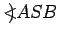
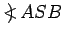
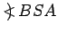
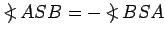
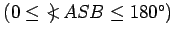
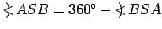
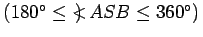

Ein Winkel ist durch zwei von einem gemeinsamen Punkt S ausgehende Strahlen a und b festgelegt, die durch eine Drehung ineinander überführt werden können.
Ist auf dem Strahl a der Punkt A und auf dem Strahl b der Punkt B ausgezeichnet, dann wird der Winkel bei der in der Abbildung angegebenen Drehrichtung durch die Symbolik (a,b) oder durch die Symbolik  oder durch einen griechischen Buchstaben bezeichnet. Der Punkt S wird Scheitelpunkt genannt, die Strahlen a und b heißen Schenkel des Winkels.
In der Mathematik heißt ein Winkel positiv bzw. negativ, wenn die Drehung im Gegenuhrzeigersinn bzw. im Uhrzeigersinn erfolgt. Es ist also grundsätzlich zwischen dem Winkel  und dem Winkel  zu unterscheiden. Es gilt   und  .
Hinweis: In der Geodäsie wird ein positiver Winkel durch Drehung im Uhrzeigersinn festgelegt.